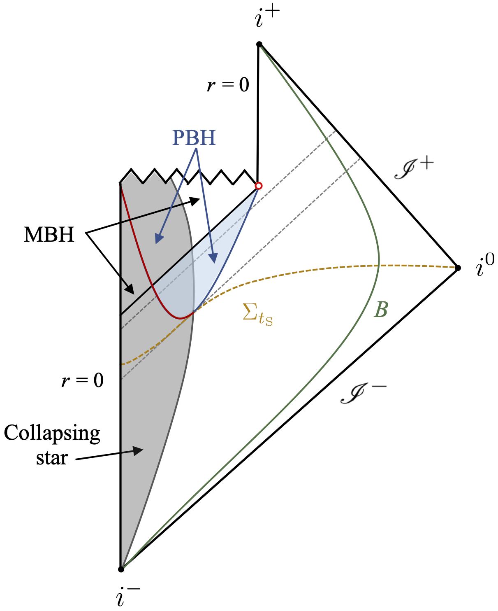
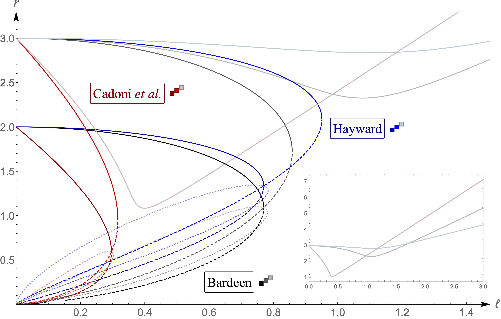
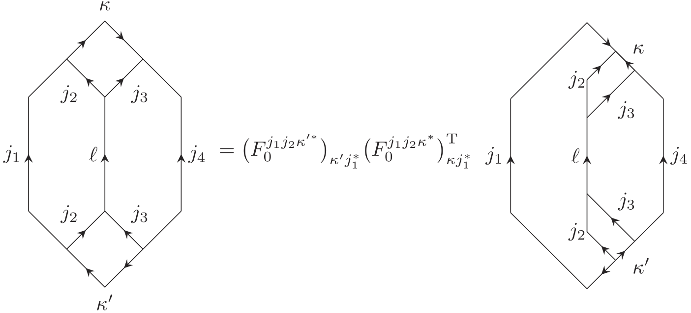

Research
Themes from my research on black holes and quantum information.
My research focuses primarily on black holes. While the existence of dark compact objects has been established beyond reasonable doubt, their precise physical nature remains unclear. Current observational data is remarkably well described by the Schwarzschild/Kerr paradigm, but does not by itself determine whether these objects possess the horizon structure, interior, or singularities associated with the classical black hole solutions of Einstein’s general relativity.
A useful way to sharpen this question is to ask what distinguishes a genuine “horizonful” black hole from an ultracompact object whose exterior gravitational field is nearly indistinguishable from that of a black hole. Much of my work approaches this problem from the near-horizon region outward. I study the conditions under which trapped regions and apparent horizons can form, remain regular, and evolve consistently in semiclassical and modified theories of gravity.
Black holes and horizons in semiclassical gravity
Event horizons are indispensable in mathematical relativity, but their global nature makes them a poor starting point for asking what an observer can actually test. This part of my research focuses instead on quasilocal notions such as trapped regions and apparent horizons, especially the conditions under which they can form in finite time for a distant observer while remaining regular. In semiclassical gravity these assumptions are not innocuous: they constrain the near-horizon geometry and the causal character of the horizon. The resulting consistency conditions provide a way of asking whether an astrophysical compact object is a genuine physical black hole, or an alternative description (e.g., a horizonless ultracompact object) that only mimics one.

From Int. J. Mod. Phys. D 31, 2230015 (2022).
Regular black holes and singularity resolution
Classical black holes are accompanied by singularities, where the theory that predicts them also stops being predictive. Regular black holes replace the singularity by a finite-curvature core, but regularity alone is not enough. A viable model should form dynamically, avoid destructive inner-horizon instabilities, admit a consistent thermodynamic interpretation, and differ from both classical black holes and horizonless mimickers in controlled ways. Much of my recent work treats regular black holes not as isolated metrics, but as candidates to be filtered through these physical requirements. The goal is to understand whether singularity resolution can produce astrophysically relevant black holes, or whether the consistency conditions turn into no-go criteria.
Modified and higher-curvature gravity
General relativity is likely an effective theory, and black holes are among the sharpest probes of its possible extensions. I investigate how modified and higher-curvature theories constrain the existence of physical black holes, and whether their apparent horizons can reproduce the universal near-horizon behaviour found in semiclassical gravity. Recent pure gravity constructions are especially interesting because they suggest that singularities may be resolved by the gravitational sector itself, without introducing ad hoc exotic matter. The main question is then not only whether a regular solution exists, but whether the underlying theory has a controlled general-relativistic limit, a consistent horizon structure, and stable dynamical evolution.
Strong-field signatures of ultracompact objects
Distinguishing black holes from their alternatives ultimately requires observables. The strongest signatures are expected to come from the region where gravity is most nonlinear: light rings, lensing, ringdown spectra, accretion flow images, and horizon-scale shadows. My work explores which of these features are robust consequences of horizons, singularity resolution, or the matter sector used to regularise the geometry. This distinction is important because a striking signal in one model may be an artefact of the model rather than a generic prediction. The aim is to identify diagnostics that can survive this model dependence and be meaningfully compared with gravitational-wave and electromagnetic observations.

From Phys. Rev. D 110, 044064 (2024).
Quantum gravity, quantum information, and foundations
Alongside my work on black holes, I am interested in quantum information theory, emergence of spacetime, measurement/tomography, and quantum foundations. This includes categorical and discrete descriptions of quantum geometry, formal aspects of quantum mechanics, and classical-quantum dynamics. These projects are connected by a common question: which features of classical physics can emerge from quantum or generalised probabilistic descriptions, and which consistency conditions force us to revise the classical spacetime picture? This broader perspective feeds back into black hole physics, where horizons, observers, backreaction, and information are inseparable.

From Phys. Rev. D 110, 086013 (2024).